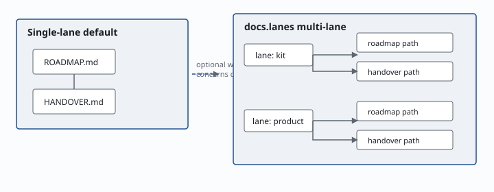
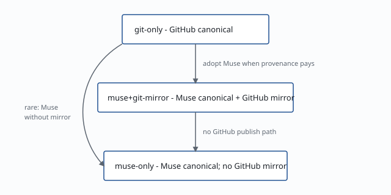
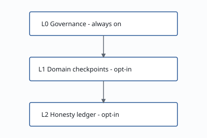
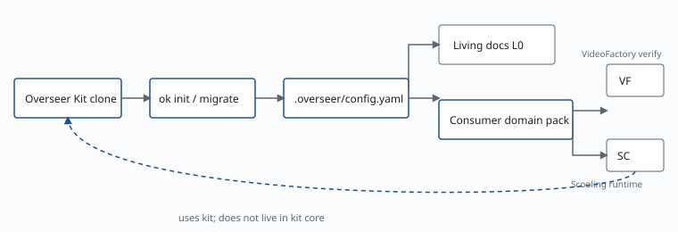

Freeze the plan. Review it independently. Then build — so AI work cannot fake DONE.
Freeze review, living docs, and the right model for each stage — Thinking where judgment is needed, cheaper Auto for mechanical build — so you do not burn a frontier model on every step. Product runtimes stay in your apps; this kit ships the governance + honesty machinery.
Overseer Kit already connects to MuseHub. You can run fully on GitHub alone; when you want Muse as the memory layer — content-addressed history, stronger continuity, GitHub as the mirror — flip the regime. Same ok commands. Not a second agent product.
AI-assisted development breaks down at the boundaries between sessions:
Amnesia — each new chat re-derives context from scratch.
Self-approval — phases get marked complete without independent review.
Silent drift — living docs fall out of sync with reality.
Skipped checkpoints — expensive remakes when mechanical gates are bypassed.
🆗 Overseer Kit makes skipping honesty expensive — not by running your product, but by governing how phased work proceeds.
Core safety — always on
This is the center of the system — not an add-on. A phase freezes its contract, an independent review must pass, then Auto builds only against that freeze. Living docs and model-tier labels keep every session honest.
Frozen spec + freeze review
Thinking freezes WHAT/HOW. ok review --freeze (and the review loop) cites findings by file+line. No build claims DONE without a pass — that is how self-approval dies.
ROADMAP + Handover
ROADMAP is the phase board (status + model tier per phase). Handover is the session baton: what is true now and the one next paste-ready prompt.
Right model · lower spend
The kit is the rulebook, not the runtime: ROADMAP + ok route + policy/model-routing.yaml recommend Thinking vs Auto (and when to escalate). Your IDE/runtime actually dials the model. Spend the expensive thinking tier on freeze/design; mechanical build stays on cheaper Auto — that is deliberate cost control, not a slogan.
Hygiene before you stop
ok governance-sync --dry-run keeps ROADMAP and Handover aligned. Build-verification review gates Auto DONE the same way freeze review gates the spec.
Structure at a glance
How the kit is built — lanes, regimes, layers, and kit→consumer boundaries. (Scenarios below show who uses those pieces.)
Lanes are few durable ROADMAP/HANDOVER pairs. Rows and manifests are many work units — do not invent a lane per ticket.

Single-lane default: ROADMAP ↔ HANDOVER
Optional multi-lane: each lane maps to its own living-doc pair
git-only is a first-class baseline. Muse regimes deepen substrate; they do not unlock exclusive core features.

git-only — GitHub canonical
muse+git-mirror — Muse canonical + GitHub mirror
muse-only — Muse canonical; no GitHub mirror
L0 (including freeze review) is the always-on safety loop. L1/L2 add mechanical domain evidence and the honesty ledger when your repo binds those modules — they are not “skip freeze review.”

L0 — living docs, phases, freeze review (always on)
L1 — domain checkpoint orchestrator (bind when you have verify scripts)
L2 — honesty ledger / producer≠verifier (bind when dual-control matters)
The kit ships sockets. Your apps own domain packs and product runtime UX.

Kit clone → ok init → config + living docs
Consumers own verify scripts and product UX
Layers in plain language
L0 is not optional. Freeze review, living docs, and model-tier discipline ship as the baseline. L1 and L2 are extra mechanical sockets you bind when your domain has verify scripts or needs a hash-chained ledger — they do not replace freeze review, and they are not “the review step.”
L1 — Domain checkpoints (bind when ready)
Consumer-owned verify scripts + manifests · ok verify-step orchestrator — why the flag exists: the kit cannot invent your video/export/research checks until you write them
L2 — Honesty ledger (bind when ready)
Producer ≠ verifier · append-only hash chain · co-requirement hooks — dual-control when money/publish stakes require it
L3 — Optional deeper history
Muse substrate when provenance pays for itself — never required for L0–L2
Defaults today: freeze review and living docs are the day-one path. checkpoints.enabled / honesty.enabled start off so a fresh ok init does not fail-closed waiting for scripts you have not written yet — turn them on when bound. Flipping those defaults kit-wide needs a dedicated Thinking freeze. CLI name is ok.
Open the local console
The public site does not run the console and does not mint session credentials. Open a local process, then use the UI in the browser or desktop shell.
Path 1 — Download Mac console preferred · Apple Silicon
Confirm Python 3.11+ on the host (python3 --version).
Download the signed Apple Silicon (aarch64) .dmg via the primary Download button above (Release v0.1.0).
Optionally verify SHA256SUMS.txt and manifest signing.status: signed (see the desktop runbook).
Bind a governed checkout before launch: set OVERSEER_REPO_ROOT to the absolute path of the repo that already has .overseer/ from ok init. Without that env var, the app binds the bundled kit root inside the app — useful for dogfooding the kit, not an automatic project picker.
Open the app; the desktop shell auto-fills session bootstrap.
Confirm the chrome shows the expected bound path before any write action.
Apple Silicon (aarch64) Mac · signed+notarized · requires Python 3.11+. Set OVERSEER_REPO_ROOT to your governed repo. Windows/Linux signed installers are not published yet. No in-app folder picker in Auto v1.
Path 2 — Browser (ok app)
From a governed repo (.overseer/ present): ok app --open (or ok app, then open the printed URL).
Default local URL: http://127.0.0.1:8765/ — works only on this machine after ok app is running (this public page is static and does not host the console).
In the same terminal that started the server, copy session_credential and csrf_token.
Paste into Session bootstrap → Connect.
Credentials are process-lifetime only; never commit them; this website never mints them.
Separate tool: read-only remote glance is ok hosted-dashboard (default http://127.0.0.1:8766/) — not the Path B console and not what overseerkit.com serves.
Path 3 — Dev desktop
From kit root: ./scripts/bundle-desktop-kit.sh then cd desktop && npm install && npm run tauri dev.
Same auto-fill behavior as Path 1; still needs Python 3.11+ plus Rust/Node for dev builds.
This console is bound to one local checkout. Reads and writes (when confirmed) apply only to that tree — not to overseerkit.com and not to arbitrary remote repos. Desktop Path 1/3: set OVERSEER_REPO_ROOT to your governed repo; otherwise the shell binds the bundled kit.
Start where you are. Add layers when stakes rise. Upgrade substrate only when provenance pays for itself.
① GitHub today→② 🆗 Overseer Kit layers→③ Muse when ready
Not another agent framework. Governance + honesty for developers — clone the kit or download the Mac console.
Scenarios
Persona stories with more detail than the structure diagrams — video studio, research, accounting, classroom, multi-org OSS — with maturity badges. Same site chrome as this page.